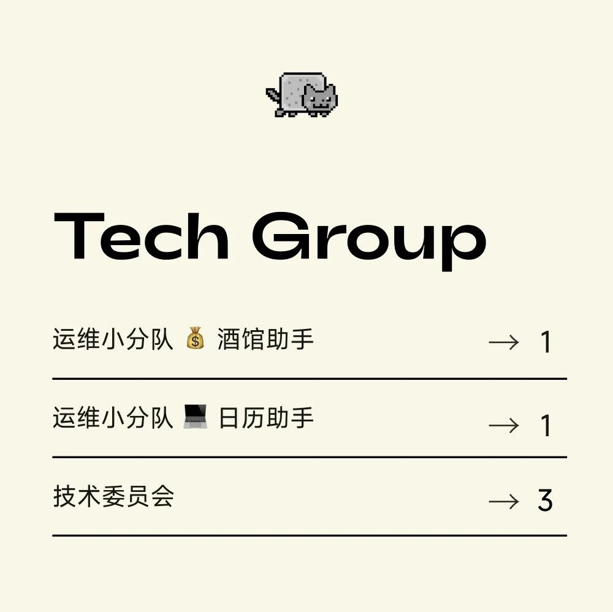

招募 | SeeDAO S5 技术伙伴招募
作者: SeeDAO
SeeDAO S5 市政厅技术伙伴招募：运维小分队 | 酒馆助手1人 +日历1人；技术委员会 3人


运维小分队| 酒馆助手1人+日历助手1人技术委员会 3人
1. 技术委员会成员有义务响应市政厅 & 社区技术方面相关资讯，给出建议；
2. 市政厅、公共项目、提案项目如有复杂技术需求（如项目测试、code review等），可向顾问寻求协助，报酬依需求另行协商
3. 协助配合技术负责人和市政厅整理新的技术相关规则撰写📮 投递联系方式：微信 jun-kung, 联系请注明来意
内容来源 | 康师傅
设计排版 | T1NG
审核 | T1NG